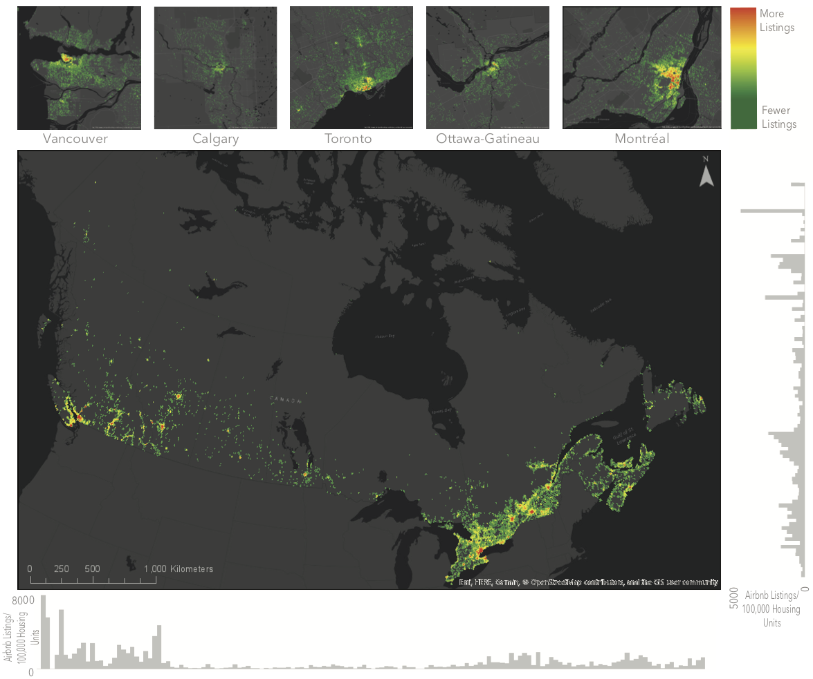
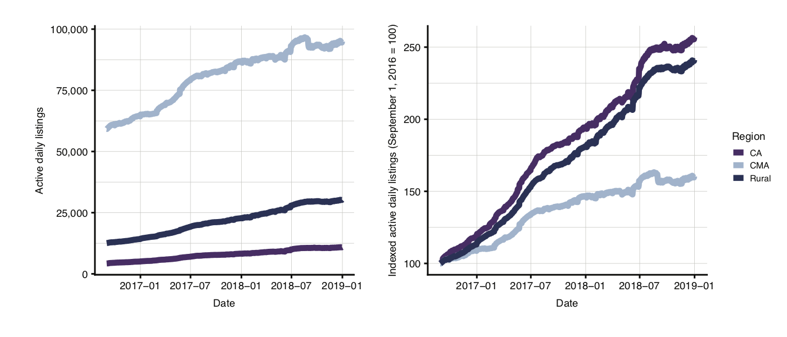
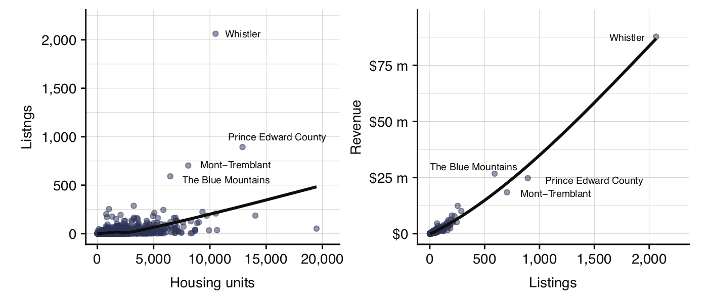
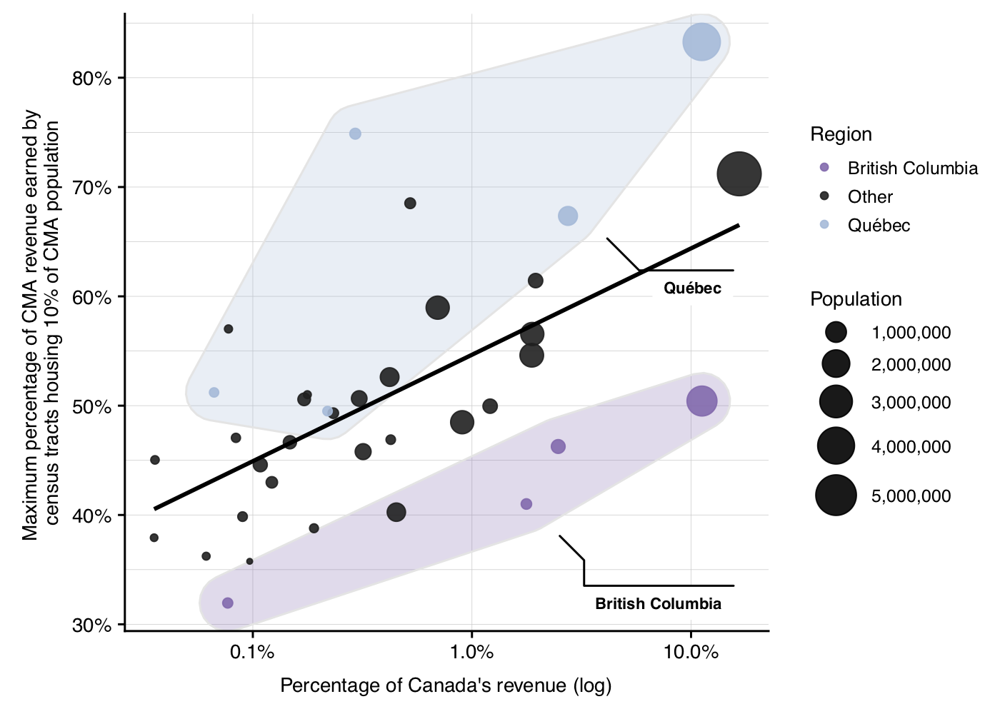
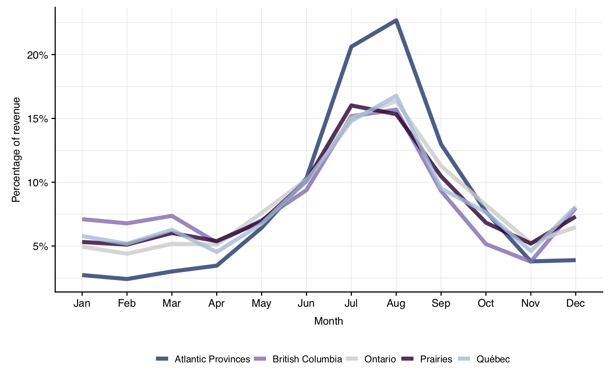
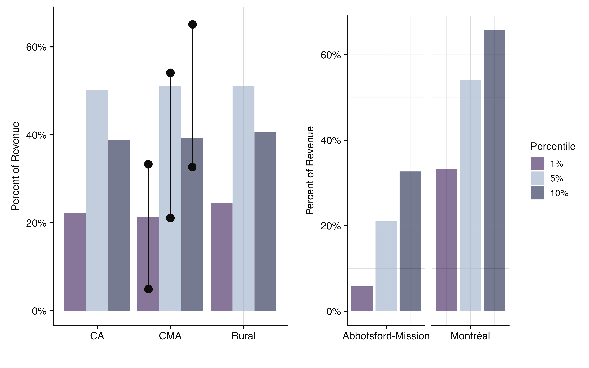
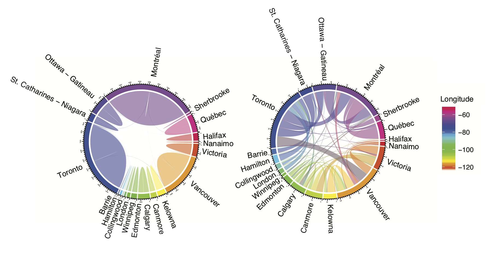
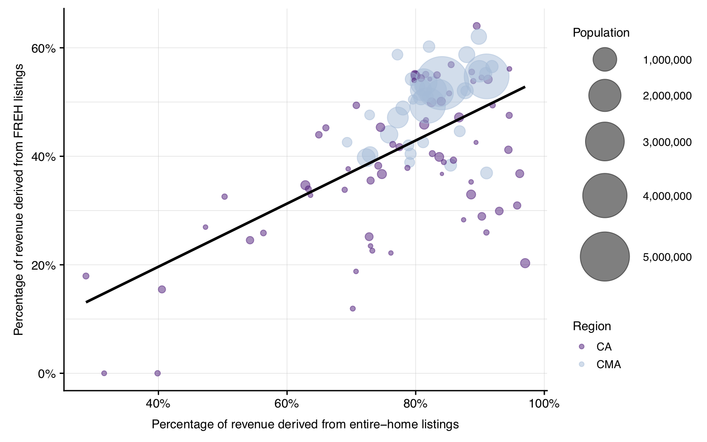
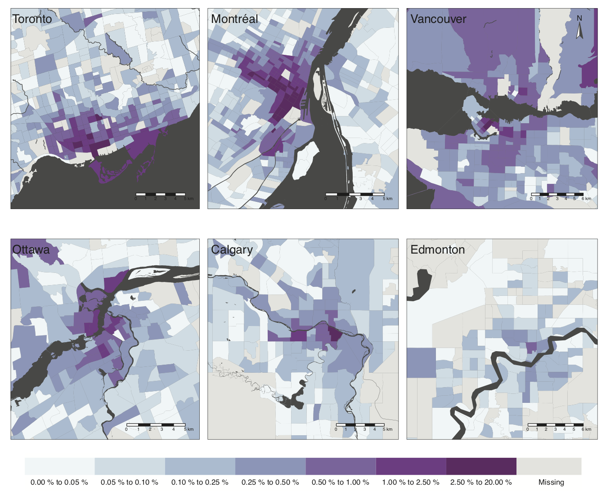
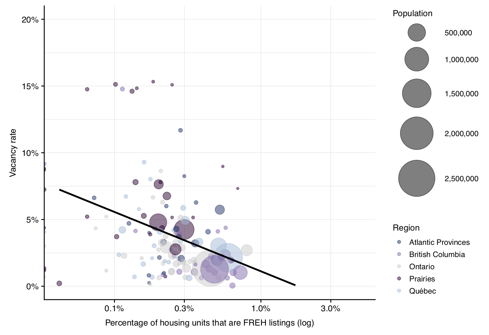

We’re excited to announce the forthcoming publication of Short-term rentals in Canada: Uneven growth, uneven impacts. Written by Jennifer Combs, Danielle Kerrigan and David Wachsmuth, the paper is the first comprehensive analysis of Airbnb across the country, will be published in the Canadian Journal of Urban Research, and is the subject of an exclusive story in the Globe and Mail this morning. The full paper is publicly available for download.
Here is the abstract:
In the last several years, Airbnb and other short-term rental services have grown precipitously across Canada, but very little is known about the scale and character of this activity or its impact on housing. Relying on spatial analysis of big data, this study presents the first comprehensive analysis of Airbnb in Canada, with an emphasis on the interaction between the short-term rental market and long-term housing. 128,000 Airbnb listings were active on average each day in 2018. Airbnb activity is highly concentrated geographically—nearly half of all active listings are located in the Toronto, Montréal and Vancouver metropolitan areas—and highly concentrated among hosts, the top 10% of whom earn a majority of all revenue. Contrary to the rhetoric of “home sharing”, almost 50% of all Airbnb revenue last year was generated by commercial operators who manage multiple listings. Moreover, 31,000 entire homes were rented frequently enough last year that they are unlikely to house a permanent resident. This housing pressure disproportionately affects cities in British Columbia. While current Airbnb activity is concentrated in major cities, active listings, total revenue, hosts with multiple listings, and frequently rented entire-home listings are all growing at substantially higher rates in small towns and rural areas.
In addition to analyzing 143 million datapoints of daily Airbnb activity, we present a number of new visualizations which help to identify the key trends and patterns for short-term rentals (STRs) in the country. Although much of the raw data we rely on is private, all of our analysis is publicly available for scrutiny, replication and reuse at GitHub. Below I summarize the main results and graphics from the paper.
Where and when is Airbnb activity happening in Canada?
Airbnb activity in Canada spans the entire country. Nearly half (46%) of all active Airbnb listings are located in Montréal, Toronto or Vancouver, despite the fact that these CMAs only house 36% of Canada’s population. In total, 71% of Airbnb listings are located in one of Canada’s 35 CMAs (which house 69% of the country’s population), 8% are located in one of its 117 CAs (which house 11% of the country’s population) and the remaining 21% are located in rural areas (which house 19% of the population). Figure 1 shows the distribution of active Airbnb listings across the country, while Figure 2 shows active listing growth from September 2016 to December 2018.

Figure 1: Airbnb listings across Canada and in the five largest CMAs, with histograms of the distribution of listings by longitude and latitude.

Figure 2: Raw and indexed growth of daily active Airbnb listings by settlement type
Previous research on STRs in Canada (including our own) has focused on the large cities. In this paper we also examine smaller communities, and find that short-term rentals are growing much faster there than in the big cities. The year-over-year growth in active daily listings was 19% in large cities, but 42% in smaller cities and 44% in rural areas. Likewise, revenue grew 31% in big cities but 53% in smaller cities and 58% in rural areas. Moreover, rural areas feature an incredible concentration of Airbnb activity: 15% of all listings and 28% of all revenue are concentrated in just four municipalities which collectively house fewer than 0.15% of rural residents but are major national tourism destinations. These are Whistler, British Columbia; The Blue Mountains and Prince Edward County, Ontario; and Mont-Tremblant, Québec. Figure 3 demontrates the extent to which these four locations are enormous outliers in terms of nubmer of Airbnb listings per unit of housing, even though the revenue these listings earn is in line with other rural destiations.

Figure 3: Average daily listings by total housing units (left) and total 2018 revenue by average daily listings (right) in rural municipalities
The spatial concentration of Airbnb activity within CMAs varies significantly between cities, as shown in Figure 4. In general, CMAs with more absolute revenue also exhibit higher levels of revenue concentration, suggesting that the costs and rewards of the platform’s use are highly localized. However, cities in Québec and British Columbia stand out as partial exceptions to this pattern. In Québec, spatial concentration of revenue is substantially higher than expected given the proportion of revenue its cities earn, while in British Columbia, concentration is lower than expected.

Figure 4: Concentration of Airbnb revenue per CMA (as measured by the maximum percentage of revenue earned by census tracts housing 10% of CMA population) by the percentage of total Canadian Airbnb revenue the CMA earned
Airbnb activity also exhibits temporal concentration; on average, after adjusting for secular growth patterns, listings earn the largest share of their total yearly revenue in July and August, and this pattern is particularly strong in Atlantic Canada (Figure 5).

Figure 5: Percentage of annual Airbnb revenue earned each month (growth adjusted)
Who is making money on Airbnb and how?
Airbnb hosts are earning unprecedented revenue in Canada, but a smaller and smaller share of operators are earning a larger and larger piece of the pie. In 2018, hosts across the country earned $1.8 billion, which was a 40% increase in revenue over the previous year, despite the fact that the number of active listings only increased by 25%. This revenue was not evenly distributed, however. Among the 103,290 hosts that earned revenue in 2018, the median host earned $3,180, while the average host earned $13,290.
Revenue is highly concentrated amongst a small number of hosts at all scales of analysis. In general, CMAs, CAs, and rural areas show similar levels of concentration; for each settlement type, the top 1% of hosts earn 20% of all revenue and the top 10% of hosts earn more than half of all revenue (Figure 6).

Figure 6: Percentage of revenue earned by the top 1%, 5%, and 10% of hosts in CMAs, CAs, and rural areas over the last twelve months (hosts with no revenue in the last twelve months are excluded)
Commercial operators (hosts with two or more entire-home listings or three or more private-room listings) are earning large and growing amounts of all Airbnb revenue in Canada. CMAs and rural areas are slightly more commercialized than CAs: 48% of all revenue is earned by commercial operators in the former, while in the latter they earn 45% of all revenue. In Montréal, fully 59% of all revenue is earned by commerial operators.
Figure 7 shows connections between multilistings owned by the same host, illustrating that properties managed by commercial operators are significantly more likely to be clustered within one CMA than spread across multiple CMAs (left panel). However, an analysis of cross-CMA multilisting connections (right panel) shows that multilistings connections are more likely occur between cities that are in close proximity to one another, or between large cities.

Figure 7: Distribution of multilistings within and between cities. The left panel shows the geographical location of multilistings organized by host (each line connects two listings operated by the same host), and demonstrates that most multilisting hosts operate within a single city. The right panel shows the same relationships, but only for hosts with listings in multiple cities, and demonstrates strong regional interconnections as well as interconnections between the largest CMAs.
On average, entire-home listings make up a higher proportion of active listings (83%) and revenue (95%) in rural areas than in CMAs (63% of listings and 86% of revenue) or CAs (70% of listings and 89% of revenue). Figure 8 shows the relationship between city size, revenue, and percentage of revenue generated by entire-home listings. The largest, highest-earning cities (including CMAs and CAs) consistently earn very large proportions of their revenue from entire-home listings, suggesting that home sharing is not the predominant form of revenue generation in these areas.

Figure 8: Percentage of revenue derived from entire home listings by revenue earned in the last year for each CMA and CA, weighted by population
Are short-term rentals threatening long-term housing in Canada?
To estimate STR-induced housing loss, we define a threshold of activity for entire-home listings. Frequently rented entire-home listings (FREH) are those which were available for rent at least half the year (183 nights) and actually rented at least 90 nights. FREH listings represent a conservative estimate for housing either directly converted to STR or under serious threat of conversion since it is highly unlikely that a home that spends the majority of the year listed on Airbnb is housing a long-term resident.
Using this estimate, Airbnb has removed approximately 31,100 units of housing from the long-term rental market. Canada-wide, the number of FREH listings grew by 40% in the last year.
There is a strong correlation (ρ = 0.67) between the proportion of revenue generated by entire-home listings and the proportion of revenue generated by FREH listings (Figure 9). In general, large CMAs earn larger portions of revenue from FREH listings than expected based on the share of revenue they earn from all entire-home listings.

Figure 9: Percentage of revenue derived from entire-home listings and frequently rented entire-home listings
Despite substantial growth relative to other Airbnb listings, FREH listings are still a small fraction of total housing; they do not exceed more than 0.8% of total private housing units in any of Canada’s CMAs. However, this fact disguises significant variation within CMAs. For example, in some census tracts in downtown Montréal one in ten housing units are frequently rented on Airbnb (Figure 10).

Figure 10: The proportion of housing units frequently rented on Airbnb as entire homes
A useful measure of STR impacts on housing availability is the ratio of the percentage of housing units in a CMA that are Airbnb FREH listings to the local rental vacancy rate. Cities with high percentages of the housing stock frequently rented on Airbnb and simultaneously low rental vacancy rates are areas with heightened STR-induced housing pressure—areas where fewer renters can find apartments to rent while those who can pay higher rents. In Figure 11, the cities experiencing high levels of STR- induced housing pressure are located below the trend line. Cities in British Columbia and Ontario have particularly high portions of frequently rented listings and very low vacancy rates, while cities in the Prairies exhibit relatively low levels of FREH listings but high vacancy rates.

Figure 11: Vacancy rate vs. percent of housing units frequently rented on Airbnb by CMA and CA
Conclusions
This paper provides the first comparative analysis of Airbnb activity in communities across Canada. It reveals highly uneven impacts. Across multiple metrics, Canada’s largest CMAs have more concentrated and commercialized Airbnb activity than CAs and rural areas. A larger share of CMA revenue is derived from frequently rented entire-home (FREH) listings and commercial multilistings, and both revenue and activity are more concentrated within specific neighbourhoods and census tracts. Montréal in particular has highly concentrated Airbnb activity, with over 30% of all Airbnb revenue earned by just 1% of its hosts, and census tracts where one in ten total housing units is frequently rented on the platform. In total, Airbnb has likely removed approximately 31,100 units from Canada’s long-term rental markets. Of the 31,100 FREH listings, 44% of these are located in Canada’s three largest CMAs and 68% are located within a CMA, although FREH listings are growing much more quickly in CAs and rural areas. Due in part to low rental vacancy rates, British Columbia’s cities may be feeling the impact of high levels of Airbnb activity most acutely.
‘Short-term rentals in Canada: Uneven growth, uneven impacts’ is forthcoming in the Canadian Journal of Urban Research. An author pre-print is publicly available for download.